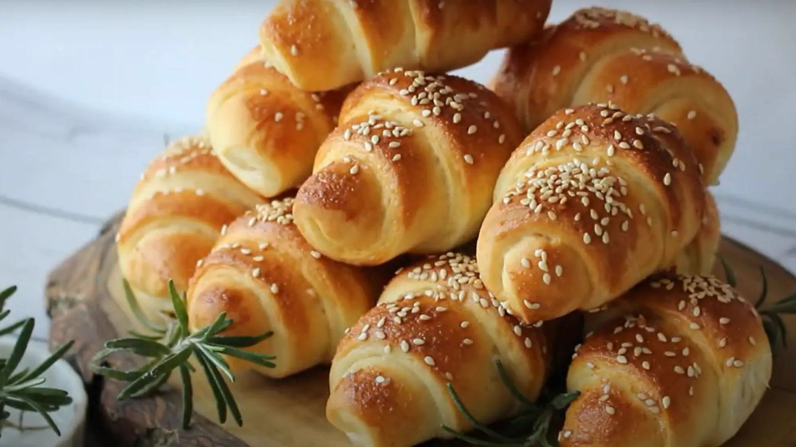
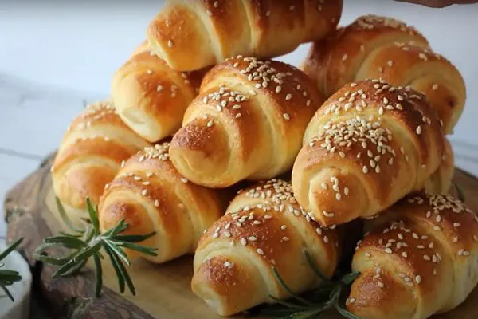
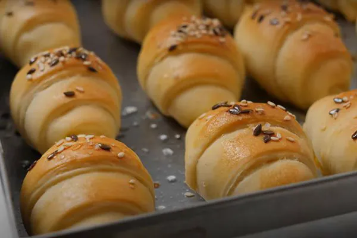
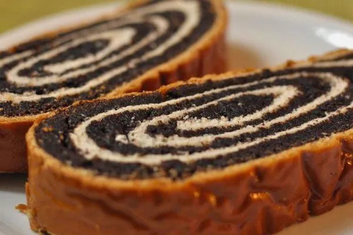
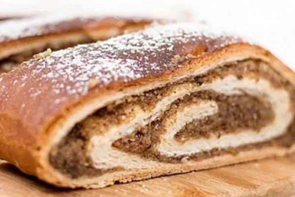
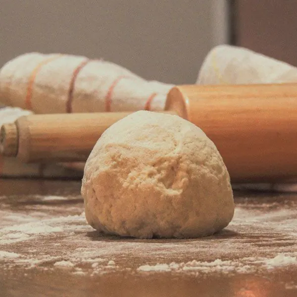

Sveže pečene domaće kiflice svaki dan, sa najkvalitetnijim sastojcima i po receptima naših baka. Dostava na teritoriji celog Beograda.
Pogledaj domaće kiflice
Zadovoljnih kupaca
Godina iskustva
Kiflica dnevno
Štrudli nedeljno
Domaće kiflice su naš najtraženiji proizvod. Prave se ručno, svakog dana, po tradicionalnom receptu i bez aditiva i konzervansa, zato su mekane i sočne, a mekoća traje danima.
U ponudi su domaće kiflice sa sirom, sa sirom i šunkom, sa kulenom, sa džemom od kajsija, sa eurokremom i prazne kiflice. Cena domaćih kiflica je od 900 do 1200 RSD po kg. Dostavljamo na teritoriji celog Beograda u roku od 24 sata. Dostava je 600 RSD, a za porudžbine preko 2500 RSD je besplatna.
Domaće kiflice – vrste i cene

Mekane i sočne kiflice pravljene po tradicionalnom receptu.


Porudžbina traje par minuta, a sveže pečene kiflice i štrudle stižu na vašu adresu u roku od 24 sata.
Pogledajte domaće kiflice, štrudle sa makom i štrudle sa orasima. Sve cene su na jednom mestu, na stranici cene. Minimalna porudžbina je 1000 RSD.
Naručite telefonom na +381 60 0409 622 ili preko kontakt forme. Za standardne porudžbine dovoljno je 24 sata unapred, a za slave i veće količine (preko 5 kg) 2-3 dana unapred.
Dostavljamo na teritoriji celog Beograda u roku od 24 sata. Dostava je 600 RSD, a za porudžbine preko 2500 RSD je besplatna. Plaćate gotovinom pri preuzimanju ili uplatom na račun.
Već 50 godina pravimo domaće kiflice i štrudle po tradicionalnim receptima, receptima koje su nam preci ostavili. Naša tajna je u kvalitetnim sastojcima i ljubavi koju unosimo u svaki proizvod.
Svi naši proizvodi se prave ručno, bez aditiva i konzervansa, baš kao što su to radile naše bake.
Saznaj više o nama
Dostavljamo na teritoriji celog Beograda u roku od 24 sata od porudžbine.
Plaćanje možete izvršiti gotovinom prilikom preuzimanja ili uplatom na račun.
Za porudžbine preko 2500 RSD dostava je besplatna na teritoriji Beograda. Za manje porudžbine dostava je 600 RSD.
Pored kiflica i štrudli, po dogovoru pravimo i torte, kolače i jela domaće kuhinje – za slave, rođendane, porodična okupljanja ili kad jednostavno poželite domaću hranu. Sve se sprema ručno, od istih kvalitetnih sastojaka kao i naše kiflice.
Javite nam šta vam treba i za koliko osoba, pa ćemo se dogovoriti oko ponude, cene i dostave. Više o tome pročitajte na stranici o nama.
Pošaljite upitPravimo domaće kiflice sa sirom, sa sirom i šunkom, sa kulenom, sa eurokremom, sa džemom od kajsija i prazne kiflice, kao i štrudle sa makom i štrudle sa orasima, uključujući posne. Po porudžbini pravimo i torte, kolače i jela domaće kuhinje.
Cena domaćih kiflica je od 900 do 1200 RSD po kg, u zavisnosti od punjenja. U jednom kilogramu ima oko 30 punjenih kiflica. Sve cene pogledajte na stranici cene.
Računajte 3 do 4 kiflice po gostu kada se služe uz ostalu hranu. U kilogramu ima oko 30 kiflica, pa je za 20 gostiju potrebno 2 do 3 kg, a za 50 gostiju 5 do 7 kg. Pogledajte tabelu sa količinama.
Naručite telefonom na +381 60 0409 622 ili preko kontakt forme. Dovoljno je 24 sata unapred, a za veće porudžbine (preko 5 kg) i slave 2-3 dana unapred. Minimalna porudžbina je 1000 RSD.
Da, dostavljamo na teritoriji celog Beograda u roku od 24 sata od porudžbine. Dostava je 600 RSD, a za porudžbine preko 2500 RSD je besplatna.
Svake subote nas možete naći na pijaci u Bloku 44 na Novom Beogradu, gde možete kupiti i manje količine kiflica i štrudli.
Pozovite nas ili popunite kontakt formu i naručite naše ukusne domaće kiflice i štrudle već danas.
Kontaktirajte nas